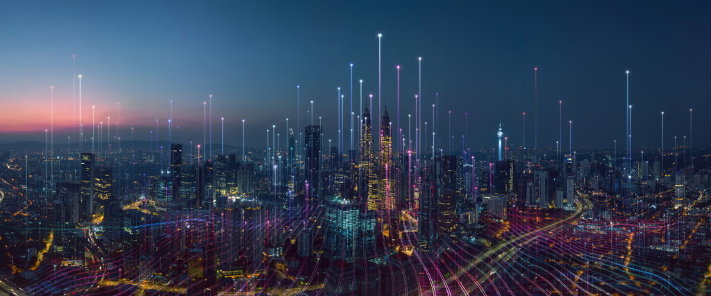

กิจกรรมทางระบบเครือข่ายต่าง ๆ เช่น การควบคุมการทำงานจากระยะไกล, การเข้าถึงฐานข้อมูลขนาดใหญ่ หรือการสร้างประสบการณ์การใช้งานร่วมกันให้แก่ผู้ใช้งาน กิจกรรมเหล่านี้ล้วนเกี่ยวพันกับระบบเครือข่ายและการสื่อสาร โดยมีเทคโนโลยี 5G และ 6G เป็นรากฐานระบบการสื่อสารของ Mataverse
เทคโนโลยี 5G นั้นมีข้อได้เปรียบเรื่องความเร็วสูง, ความหน่วงที่ต่ำ, มีการใช้งานแพร่หลาย, ต้องการพลังงานต่ำในการเชื่อต่อกับสิ่งอื่น ๆ ด้วยคุณสมบัติเหล่านี้ ส่งเสริมให้การเกิด Metaverse นั้นมีความเป็นไปได้สูง ในขณะที่เทคโนโลยี 6G นั้นจะเป็นการทลายข้อจำกัดทางด้านเวลาและความเป็นจริงเสมือน โดยไปช่วยทำให้มนุษย์, เครื่องจักร และสิ่งอื่น ๆ บนโลกแห่งความจริงกลายไปเป็น “สิ่งแวดล้อม” ของโลกเสมือน โดยช่วยเชื่อมต่อทั้งสองโลกเข้าด้วยกัน ทั้งหมดนี้จะก่อให้เกิดระบบเครือข่ายพื้นฐานของ Metaverse ขึ้น
ในสภาพแวดล้อมของเครือข่าย 5G และ 6G นั้น การสื่อสารเชิงควอนตัมจะช่วยเพิ่มความปลอดภัยใน Metaverse ได้เป็นอย่างดี โดยมีการเสนอว่าการสื่อสารเชิงควอนตัมนั้นจะให้ความปลอดภัยที่สูง เนื่องจากมีการนำคุณสมบัติของควอมตัมมาใช้ เช่น ทฤษฎีที่ว่าสถานะควอนตัมไม่สามารถโคลนนิ่งได้ และทฤษฎีหลักความไม่แน่นอน ยิ่งไปกว่านั้น การสื่อสารเชิงควอนตัมจะช่วยยกระดับความปลอดภัยโดยรวมของระบบด้วยคุณสมบัติการทับซ้อน (Superposition) ในคิวบิท (หน่วยย่อยที่เล็กที่สุดในระบบคอมพิวเตอร์เชิงควอนตัม)
นอกจากนี้ ยังมีสิ่งที่นับได้ว่าเป็นอีกหนึ่งบทบาทสำคัญของระบบโครงสร้างพื้นฐาน Metaverse นั่นก็คือ the Internet of Things (IoT) ซึ่งจะมีส่วนช่วยในการให้ความรู้สึกที่สมจริงและลื่นไหลกับผู้ใช้ในขณะที่มีการปฎิสัมพันธ์ระหว่าง Metaverse และโลกแห่งความจริง อย่างไรก็ตาม การใช้งานดังกล่าวก็ยังคงมีปัญหาอยู่บางประการ เช่น ความไม่สมดุลกันระหว่างการเกิดข้อมูลจำนวนมากและทรัพยากรการรับรู้ที่จำกัด หรือการทำงานของเซนเซอร์รับข้อมูลที่อาจยังมีประสิทธิภาพไม่เป็นที่น่าพอใจ เป็นต้น
จะเห็นได้ว่าการสร้าง Metaverse นั้นต้องการระบบการประมวลผลที่ทรงพลังมาก สถาปัตยกรรมคอมพิวเตอร์ในปัจจุบันยังนั้นยังไม่สามารถทำงานเพื่อให้ถึงเกณฑ์หรือความต้องการขั้นต่ำที่จำเป็นต่อการสร้างประสบการณ์ที่เข้มข้นในการใช้ Metaverse ได้ อย่างไรก็ตาม ระบบประมวลผลแบบ cloud, edge และระบบประมวลผลที่ล้ำสมัยรูปแบบอื่น ๆ นั้นสามารถส่งเสริมขอบเขตในการพัฒนาพลังแห่งการประมวลผลให้เป็นไปได้มากขึ้น และสามารถถูกพัฒนาจนกลายเป็นโครงสร้างหลักของ Metaverse ได้
นายจรณินทร์ น้อยวิบล ปวส.2/1 เลขที่ 8